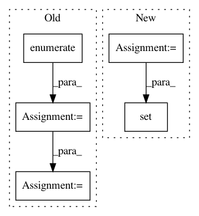

2f7c8038a891f80318ba0aa0c3b800e91a1f5fe4,torch_geometric/nn/conv/message_passing.py,MessagePassing,__init__,#MessagePassing#Any#Any#Any#,44
Before Change
assert self.node_dim >= 0
self.__message_args__ = getargspec(self.message)[0][1:]
self.__special_args__ = [(i, arg)
for i, arg in enumerate(self.__message_args__)
if arg in special_args]
self.__message_args__ = [
arg for arg in self.__message_args__ if arg not in special_args
]
// skip self, out
After Change
self.__message_signature__ = inspect.signature(self.message)
// skip self, out
self.__update_signature__ = inspect.signature(self.update)
if set(update_special_args) - set(self.__update_signature__.parameters):
raise TypeError("Incomplete signature of update: {} are missing required arguments".format(
set(update_special_args) - set(self.__update_signature__.parameters)
))
In pattern: SUPERPATTERN
Frequency: 3
Non-data size: 5
Instances
Project Name: rusty1s/pytorch_geometric
Commit Name: 2f7c8038a891f80318ba0aa0c3b800e91a1f5fe4
Time: 2019-12-25
Author: m.kochurov@partner.samsung.com
File Name: torch_geometric/nn/conv/message_passing.py
Class Name: MessagePassing
Method Name: __init__
Project Name: CamDavidsonPilon/lifelines
Commit Name: b1d839cb8e521c3cf2efaebe17082f1a9680a253
Time: 2020-05-13
Author: cam.davidson.pilon@gmail.com
File Name: experiments/working_npmle.py
Class Name:
Method Name: create_turnball_intervals
Project Name: dmlc/gluon-nlp
Commit Name: 03b0e7061cf477fbeccb9c128ee76603df582d86
Time: 2018-09-04
Author: leonard@lausen.nl
File Name: scripts/word_embeddings/evaluate_pretrained.py
Class Name:
Method Name: